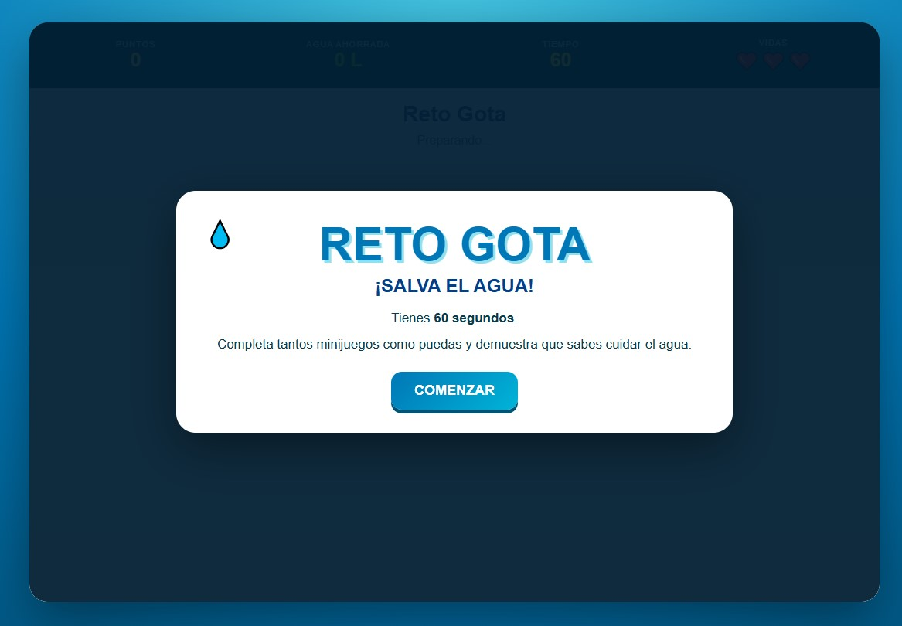
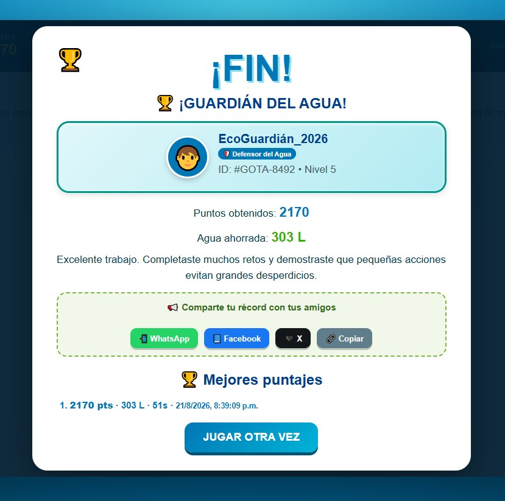

Reto Gota
¡Salva el agua! Videojuego educativo de minijuegos
Descripcion
Reto Gota: Salva el Agua es un videojuego educativo compuesto por diferentes minijuegos relacionados con el ahorro y el uso responsable del agua.
El jugador dispone de 60 segundos y tres vidas para completar la mayor cantidad posible de desafíos relacionados con cerrar llaves, reparar fugas, controlar el tiempo de ducha, recolectar lluvia y reconocer hábitos responsables.
Idea del proyecto e Idea Principal
El propósito es enseñar hábitos de cuidado del agua mediante desafíos breves, variados e interactivos, permitiendo practicar acciones orientadas a evitar el desperdicio y reutilizar el recurso dentro de una misma partida dinámica.
Objetivo del jugador
Completar tantos minijuegos como sea posible antes de que termine el tiempo o se pierdan las tres vidas, maximizando la puntuación y la cantidad de agua ahorrada.
Genero
- Educativo.
- Arcade.
- Colección de minijuegos.
- Juego de habilidad y reflejos.
- Simulación de hábitos responsables.
Mecanica principal y Tiempo
La partida tiene una duración máxima de 60 segundos. Durante este tiempo aparecen minijuegos seleccionados de forma aleatoria, cada uno con su propio límite de tiempo, instrucciones y penalización si no se completa correctamente.
Controles
Interactuar con llaves, fugas, gotas y botones
Abrir grifos, posicionar parches o mover barriles
Nota: Totalmente compatible con pantallas táctiles y paneles de control web.
Minijuegos incluidos
- Cierra todas las llaves: Haz clic sobre las llaves abiertas para cerrarlas.
- Conecta las tuberías: Rota las piezas para crear un recorrido continuo.
- Repara las fugas: Cierra cuatro fugas antes de alcanzar el límite de pérdida.
- Llena el balde: Mantén presionado y suelta cuando esté entre 80% y 100%.
- Controla la ducha: Cierra el agua cuando el tiempo esté entre tres y seis segundos.
- Sella la tubería: Arrastra un parche al lugar correcto de la fuga.
- Atrapa el agua: Selecciona las gotas antes de que toquen el suelo.
- Regula la presión: Mueve la válvula para ubicar el indicador entre 40% y 60%.
- Riega las plantas: Riega cuando el indicador esté en la zona verde.
- Buenos hábitos del agua: Selecciona solo las acciones que ahorran agua.
- Recolecta agua de lluvia: Arrastra un barril para atrapar las gotas.
Sistemas de Puntuación, Agua y Vidas
Puntuación y Agua Ahorrada: Cada minijuego otorga puntos específicos y litros de agua ahorrados (por ejemplo, cerrar llaves otorga 100 puntos y ahorra 10 litros).
Vidas: El jugador comienza con 3 vidas. Se pierde una vida al fallar un reto, exceder el tiempo o cometer errores.
Evaluación Final y Clasificación
- Guardián del Agua: 2000 puntos o más (¡Excelente trabajo!).
- Muy buen trabajo: Entre 1000 y 1999 puntos.
- Inténtalo de nuevo: Menos de 1000 puntos.
Capturas de pantalla

Pantalla inicial

Minijuego en curso

Pantalla de resultados
Tecnologías utilizadas
- HTML5, CSS3, JavaScript y Manipulación del DOM.
- Eventos de mouse, puntero y diseño adaptable.
- Control de versiones y publicación en GitHub.
Uso de Inteligencia Artificial y Aporte Personal
Apoyo de IA: Utilizada como herramienta para proponer la estructura general del juego, organizar los minijuegos, desarrollar interacciones y estructurar sistemas de tiempo, puntos y vidas.
Aporte personal: Selección de la temática educativa, revisión de mecánicas, pruebas de minijuegos, verificación de puntuaciones y litros ahorrados, organización en GitHub y documentación.
Aprendizajes y Mejoras Futuras
Aprendizajes: Integración de múltiples minijuegos en un solo proyecto, gestión de límites de tiempo, sistemas de vidas y creación de experiencias interactivas variadas.
Mejoras futuras: Música y efectos de sonido, personalización del nombre del usuario, almacenamiento permanente del ranking, optimización táctil y expansión de minijuegos.